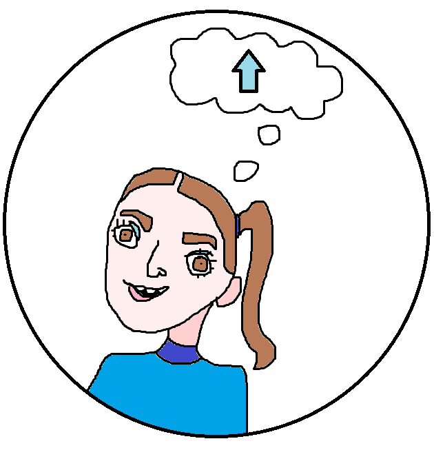

Neuroplasticity and Growth Mindset
- 
Understanding the principles of neuroplasticity can be a real benefit to people in terms of self-awareness and being able to pinpoint specific areas that can help in their development as well as moving towards their personal or career-focused goals.
How we can engage in neuroplasticity
Engaging in the principles of neuroplasticity can be done in a number of ways. However, the main concept of this engagement is centred around consistency. Making sure to consistently practice the skill you want to learn for a reasonable amount of time everyday will help to engage and strengthen those neurons and their connections.
What skills (non-technical - human skills) would you like to see developed in yourself while at Dev Academy?
A helpful book to learn more about neuroplasticity, how it works, and how we can engage with it for the sake of better productivity, self-esteem, and the achievement of personal and career-related goals is Lise Claiborne and Wendy Drewery’s Human Development: Family, Place, and Culture.
The aspects of neuroplasticity are very much related to the concept of the Growth Mindset.
Having a Growth Mindset
When coming up on difficult learning opportunities, it can be easy to throw in the towel and believe that it is too hard, the likelihood of failure is too high, so why try at all? And while this method to dealing with a challenge can save us from some loss of time, spending too much energy, and even some embarrassment, it can be a great hindrance to moving forward in life as well as our perception of ourselves. Shifting towards a more growth-centred mindset is a great alternative way of viewing the challenges we come up against – particularly in learning a new skill.
Having a growth mindset means to see your personal abilities as a skill that can be developed through consistent and intentional dedication – an aspect that engages with neuroplasticity. One way of looking at this is by seeing a challenge as something you can work towards achieving, as opposed to viewing it as something impossible because it cannot be solved immediately.
How I will be engaging with these concepts
For me, I hope to engage in intentionally incorporating a growth mindset into every challenge that I come across in the future – which, of course, will be a lot. I, personally, really appreciated Carol Dweck’s emphasis on the word “Yet”, and how it can help people to persevere through areas of life that are challenging. I may not know it yet, but, with focus and intentional development in this area, I will come to know and understand it in time.
A useful resource I found that helped me understand the growth mindset is James Clear’s book, Atomic Habits.